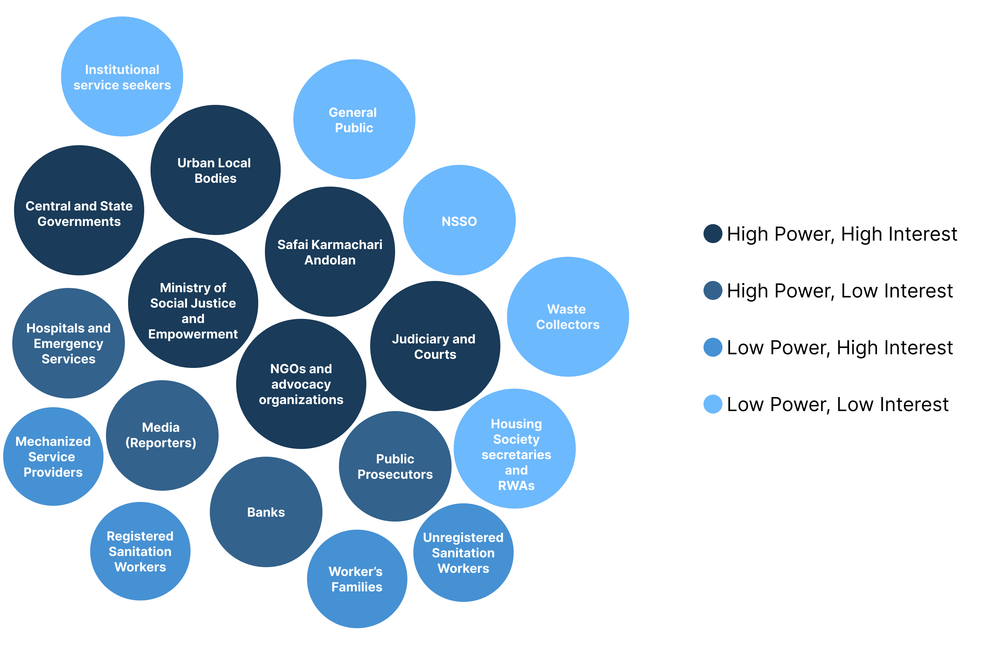

Underneath It All looks at India's sewage cleaning system through the lens of systems thinking, not as a technical or policy failure alone, but as something sustained by ordinary, normalized behaviour, how people dispose of waste, and a collective indifference that holds the whole system up from the ground.
The project maps the connections between public behaviour, institutional gaps, and caste based social structures to understand how the degradation and death of sanitation workers stays invisible to a society that depends entirely on their labour, and works to understand how the system functions as a whole and where exactly it fails.
Manual scavenging, despite being banned in India since 1993 and reinforced by the Prohibition of Employment of Manual Scavengers and their Rehabilitation Act, 2013, continues, sanitation workers are still pushed into cleaning sewers, septic tanks, and drains under life-threatening conditions, often without training or protective equipment.
We started with documentaries, articles, academic papers, and government databases to build context and understand how the system actually functions. Recurring patterns across sources let us map the interconnections within it, where solutions fail, where structural traps exist, and where reinforcing loops keep people stuck.

Caste is one of the major contributing factors, a structure that has kept the same communities pushed into this work for generations. Dalits, historically placed outside the caste hierarchy altogether, remain the ones overwhelmingly pushed into this work today, facing discrimination, health hazards, and social exclusion as part of it. An estimated three sanitation workers die every five days in India cleaning sewers and septic tanks, and research from groups like WaterAid suggests the real number runs close to three times higher than official figures. Caste discrimination, endogamy, and caste based political mobilization continue to reinforce these boundaries rather than dissolve them.
We also studied what's already been tried against the problem, legal frameworks and government schemes among them, mapping where accounts across sources converged into a single interconnected picture of the system.

Using this, we mapped the areas and the multiple problems within them, which let us understand the space in more depth and work toward a more specific issue. The post-its in the image are problem statements, each attached to its respective area.
- Kakkoos — Documentary Film, Official Release (dir. Divya Bharathi)
- Video on manual scavenging — replace with real title, couldn't confirm this one
- Manual Scavenging: The Story of a Sewer Cleaner in Delhi — The Quint
- India's Inhuman Practice of Manual Scavenging and Untouchability — Ashif Shaikh, TEDxWalledCity
- How Sewer Diving Became One of the Most Dangerous Jobs in India and Pakistan — Risky Business
- In Conversation With 'Kakkoos' Filmmaker Divya Bharathi — Women Making Films
- The Prohibition of Employment as Manual Scavengers and their Rehabilitation Act, 2013 — Gazette of India
- The Employment of Manual Scavengers and Construction of Dry Latrines (Prohibition) Act, 1993
- Exempting Equality: A Critical Analysis of the Legal Framework and Implementation Gaps in the Eradication of Manual Scavenging in India — SCC Times
- The Grim Reality of Manual Scavenging in India: A Human Rights Perspective — Garima Chawla, Journal of Infrastructure, Policy and Development
- Manual Scavenging — Press Information Bureau, Ministry of Social Justice & Empowerment
- Stink of State Apathy — Shubham Bhatia, Newslaundry
- 'I'm Born to Do This': Condemned by Caste, India's Sewer Cleaners Risk Death Daily — The Guardian
- AMC to Restore Sewer Vents Over Safety Issues — Times of India, Ahmedabad
A few things came up consistently enough to shape how we're defining the problem.
Once we had grounding in the secondary material, we checked it against people actually inside the system. We spoke with sanitation workers cleaning manholes, both independently and alongside their supervisors, an NGO practitioner who has worked on this issue for twenty years, a lawyer to understand what current law actually protects and where it falls short, and AMC officials and on ground supervisors to see how the municipal system runs in practice. We documented infrastructure, equipment, and working conditions across Ahmedabad directly, and observed both manual and machine based sewage cleaning in the field.